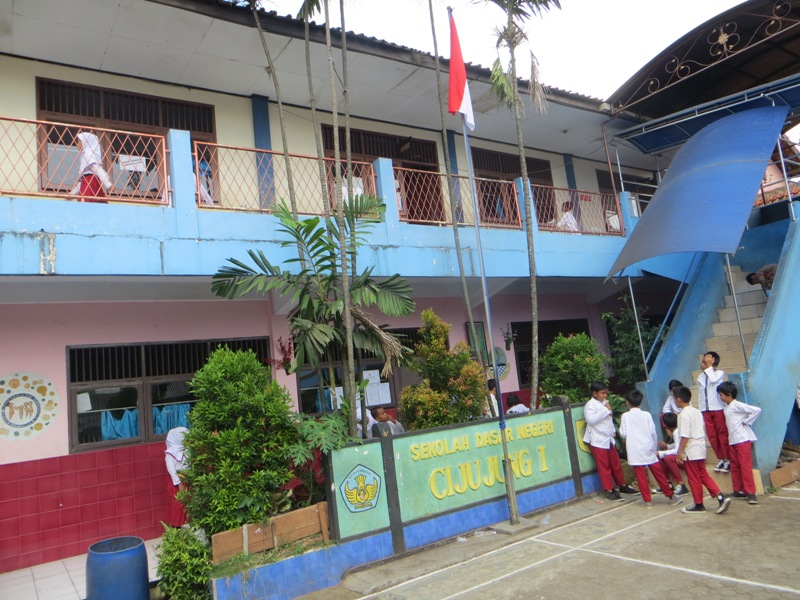
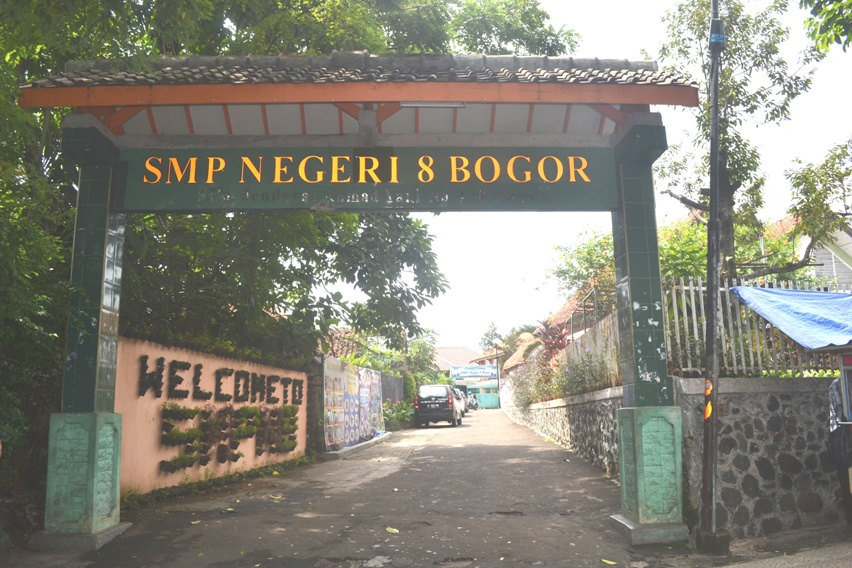
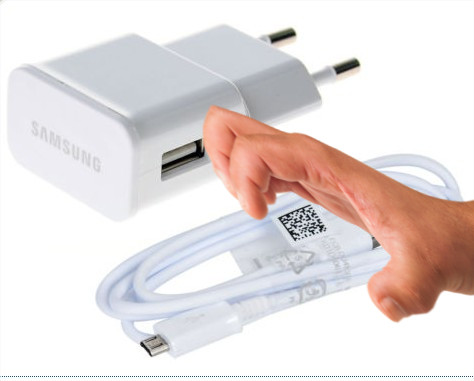
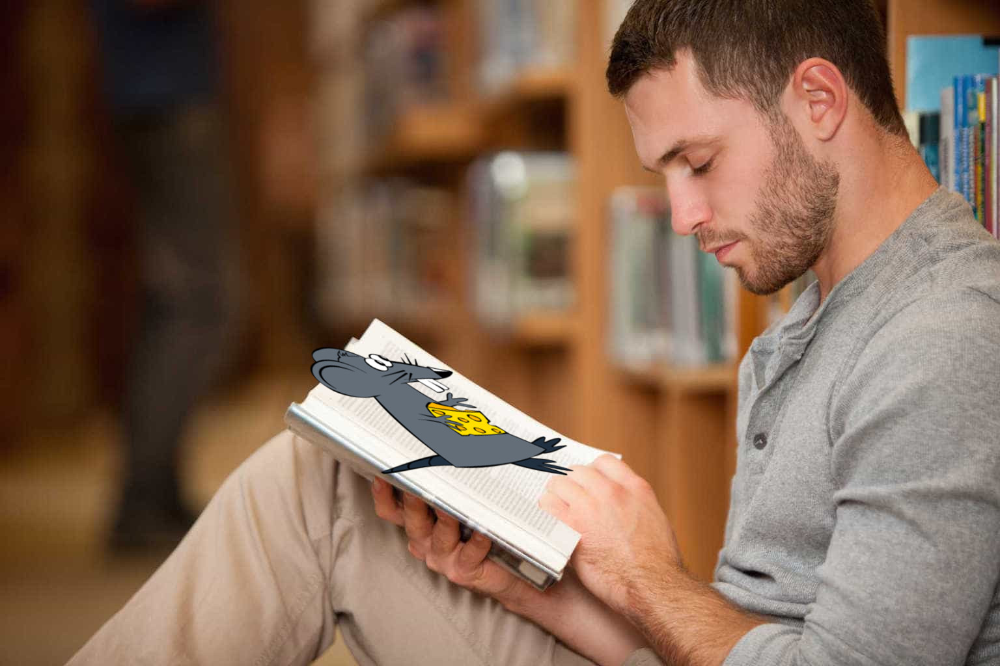

Nama : Rifqi Nurhadi Al Fiqih
Tempat,Tanggal lahir : Bogor, 25 Juli 2001
Alamat : BTN Ciluar Permai Jl. Sirsak 1 Blok F4 No.2 RT 06/09.
Cita cita : Membahagiakan orang tua , Punya banyak uang , Jadi suami Bella Hadid , dan lain lain pokoknya yang bagus bagus.
;
1.SDN Cijujung 01 , Bogor
2. SMPN 8 Bogor
3. SMK-SMAK BOGOR

1. Main HP
Saya sangat senang bermain HP , karena di HP kita bisa main banyak permainan dan bisa nonton film HEHE.
2. Minjem Chargeran
Hobby saya yang ini sangat istimewa. Karena saya tidak memiliki chargeran HP , sehingga hampir setiap hari saya meminjam chargeran ke Najwa :)
3. Minta Makanan Ke Teman
Hobby saya yang ini paling sering saya lakukan. Karena hal ini sangat menguntungkan bagi saya, seperti uang saya menjadi utuh dan perut saya menjadi kenyang,
4. Membaca
Saya senang membaca. Tapi saya senang membaca buku novel atau baca webtoon. Dan saya tidak suka membaca buku pelajaran.
Perkenalkan nama saya Rifqi Nurhadi Al Fiqih. Nama tersebut diberikan oleh kedua orang tua saya ketika saya lahir pada hari Rabu, 25 Juli 2001. Arti nama tersebut yaitu kawan pendamping pembawa kebenaran. Sewaktu kecil sekitar saya masih di sekolah taman kanak kanak saya suka dititipkan kepada nenek saya yang rumahnya tidak jauh dari rumah saya. Saya dititipkan kepada nenek saya bukan tanpa alasan. Ibu dan Bapak saya harus bekerja untuk menghidupi keluarga. Sekarang saya tinggal di BTN Ciluar Permai Jl. Sirsak 1 Blok F4 No.2 RT 06/09, bagi kalian yang ingin datang kerumah saya ,silahkan. Tapi bawa makanan ya soalnya dirumah suka ngga ada makanan hehe. Saya juga memiliki banyak cita cita , yang pertama pastinya membahagiakan orang tua.Itu yang paling diinginkan oleh semua anak bukan ?.
Nah yang kedua saya ingin punya banyak uang. Karena jika banyak uang pasti bahagia dan apabila ingin beli sesuatu tinggal beli tidak usah pikir panjang lagi. Lalu yang terakhir saya ingin menikah dengan Bella Hadid karena dia sangat menginspirasi saya dan dia sangat cantik meskipun itu tidak mungkin. Saya pun memiliki banyak hobi. Yang pertama , saya sangat hobi bermain hp. Hampir setengah hari saya bermain hp. Memang kebiasaan saya ini buruk, tapi saya tidak dapat menghentikannya. Lalu saya suka meminjam chargeran ketika disekolah karena saya tidak memiliki charger an , kalau dirumah sih saya pakai casan bapak saya. Saya juga suka meminta makanan teman saya, ini menguntungkan bagi saya tapi merugikan bagi teman saya. Maap ya teman. Dan yang terakhir saya suka membaca. Tapi saya suka membaca buku novel/webtoon dan saya tidak suka membaca buku pelajaran.Saya pernah sekolah di SDN Cijujung 01 dan SMP Negeri 8 Bogor sebelum saya masuk ke SMAKBO.